原作源件通过专用适配进入同一角色链。
已选择三件真实 JSON：stair_step 用于我方重复踏步，stairs_step 用于桥面模板，wooden_plank_straight 用于栏杆上部薄横杆。其余六角色显式继承原创 A；这些职责是我方配置，原作里的对应角色与使用行为仍待证。
本机可用菜单“星骸 → 专用搭建 → 打开原作素材研究样例（本机）”。源单位未知；位置、法线、颜色、UV 与 bevel/is_bevel 原属性完整归档。坐标和尺寸采用明确仿射，木梁只形成上部薄横杆，不拉成一面 1m 高墙板。兼容材质保留可消费表现，不冒称移植了原作着色器。
研究工作使用工具保存到私有目录。工具公开 Save/Bake 按 ResearchOnly 标记硬拒研究内容；实际资产依赖闭包由公开打包检查，拒绝纳入依赖研究资产的场景。Unity 原生另存不能作为公开隔离边界，发布依靠实际依赖闭包与文件白名单核对。原生保存边界为 8 项 PASS / 1 项 FAIL，未将其写成全部通过。
仅本机：实际源件与生成对照。源件、转换 Mesh、派生截图和消费链全部私有，公开页与公开包不携带这些数据。T11 已由用户延后（deferred_by_user）；后台源件接入与原作游戏消费证据分开交接。
历史资料：v1 固定接口族 / 九件真实原生几何三视图
下方完整保留 v0.1 的原供给图解和限制，便于追溯原件尺寸、枢轴与来源。它不是 v0.2 自由路线的当前运行契约；v2 使用方式以上方按职责适配表为准。
星骸回廊 · 工坊供给 / 桥梁与阶梯
先对齐接口，再设计母件。
这份手册让制作者知道：哪些轮廓可以重设计，哪些边界必须接得上。三视图来自第二套真实原生模型，尺寸和枢轴都有明确基准。
桥梁正交接口族 v1 · 这是一套有限桥梁/阶梯的认证输入，不是所有建筑的统一标准。只支持下列固定规格；不同造型可以换用，接口尺寸本轮不自由更改。
接口族原文 · 实际第二套登记文件 · 空白登记模板 · 三视图来源凭据
九类母件，三种供给职责。
| 职责 | 实际来源 | 如何适应路线 |
|---|
| 重复中段 | tread / deck / coping / rail / arch-stone | 按固定步进增减数量，保留原网格与UV；不缩放、裁切或挤压。 |
| 节点与收口 | post / arch-foot / keystone / abutment-cap | 按连接、端头和开口角色选择位置与认证水平旋转。 |
| 转角平台 | 由deck、coping、rail、post构成 | 转角预留可走平台及连接端口；没有一枚可任意扭曲的整桥模型。 |
| 墙芯 | 明确规则生成区 | 沿支承与洞口剖面生成；本轮仍不是工坊源件或工坊模板，不能算进九件来源。 |
本轮必须显式登记完整九个角色；不支持缺角色后自动继承或自动填块。若将来要开放部分套件继承，需要另外实现和验证。
接合基准底部中心枢轴需保留的顶面/接合区
统一的制作与导出坐标
作者坐标：X沿路、Y向上、Z横路。底部中心为(0,0,0)，不是外接盒最小角。模型轮廓必须在逻辑包络内，本族不允许未登记外扩。当前制作细节单元为0.125m，只用于这个接口族。
允许绕Y旋转0° / 90° / 180° / 270°；不认证镜像、倾斜或整件缩放。原生Blender沿Z向上；共享FBX导出后的格式适配应明确登记并检查，当前配置为unityAdapterYaw:180。调整源朝向或枢轴不能靠生成器里临时补偏移掩盖。
普通颜色、材质和UV从实际FBX+palette PNG读取；重复后仍使用源UV。没有新增切面，因为本族不裁切。颜色自由不等于接口尺寸自由。
母件职责 01 / 固定规格 · 双向重复
带鼻口踏步tread
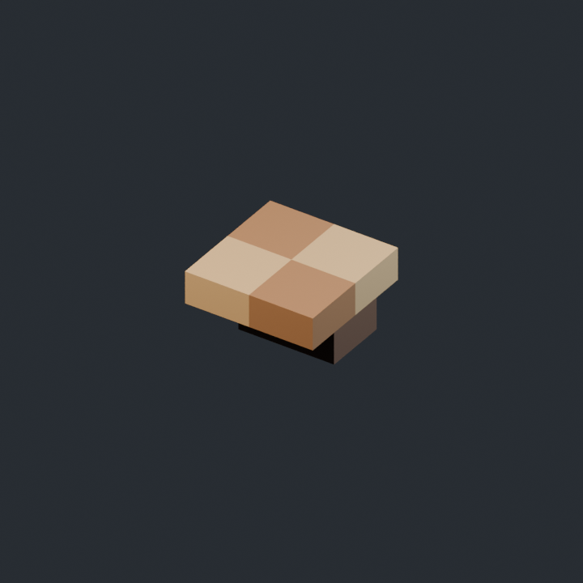
逻辑占位 0.5 × 0.25 × 0.5 m · 底部中心枢轴 · 本轮无外扩
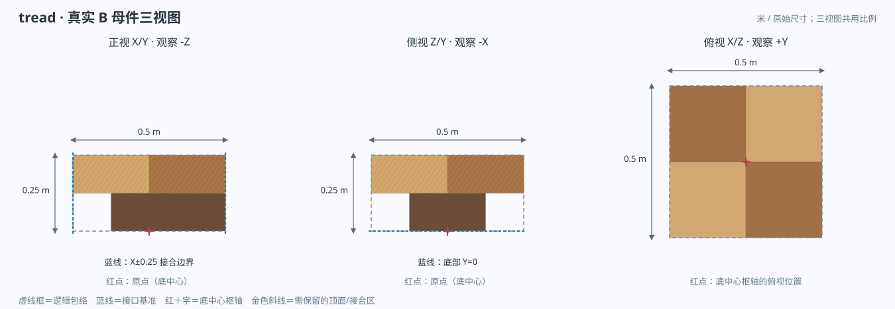
来自实际 tread/tread.blend 的 5 个原生网格、40 个顶点；三视图同尺度投影，没有用示意盒替代原模型。- 重复 / 排列
- 沿路每0.5m；横向每0.5m。单阶最多0.25m高。
- 接合与朝向
- 底部Y=0 / 可走顶面Y=0.25；鼻口朝-X，即下行方向。
- 保留什么
- 保留可走顶面及朝-X鼻口；鼻口不能反向，不能从包络中伸出去。
- 可以重设计
- 可以改跟部内缩、石层、凹槽与分色。顶面保持可走，接口高度不变。
- 接缝谁负责
- 相邻步级按0.5m进深排布；高差由规则确定，不能通过拉伸鼻口补空。
- 尺寸处理
- 保持整件原比例。只增加或减少认证规格数量；本轮不裁切、不局部变形、不自动补面，也不认证新尺寸。
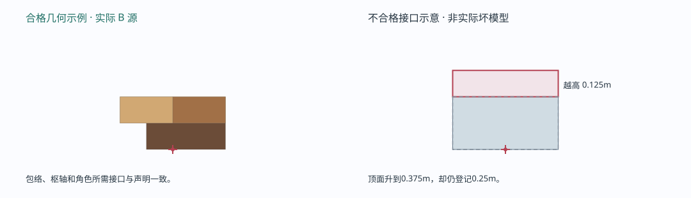
右侧红色仅为精确错误图解，说明应拒绝的接口；没有把它当作已经制作或导入的失败资产。原生源 · 实际 FBX · 色板原生 SHA256 389FD58E09CA679AEB66FF3F09B124A6F4645BA02B01A016735A631E62F38B0A
母件职责 02 / 固定规格 · 平面重复
平台铺面deck
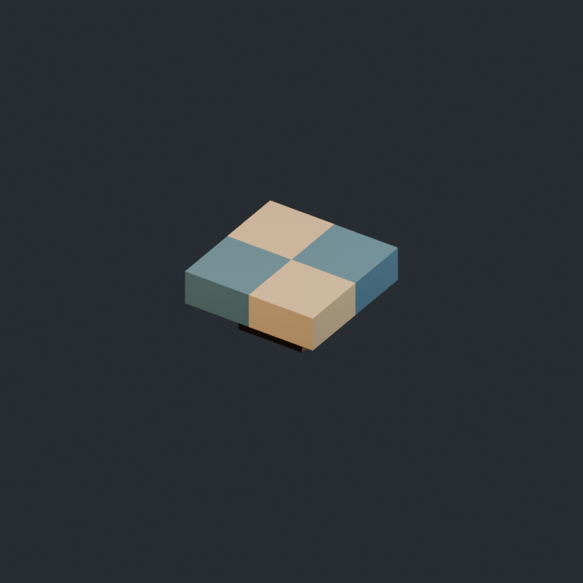
逻辑占位 0.5 × 0.25 × 0.5 m · 底部中心枢轴 · 本轮无外扩
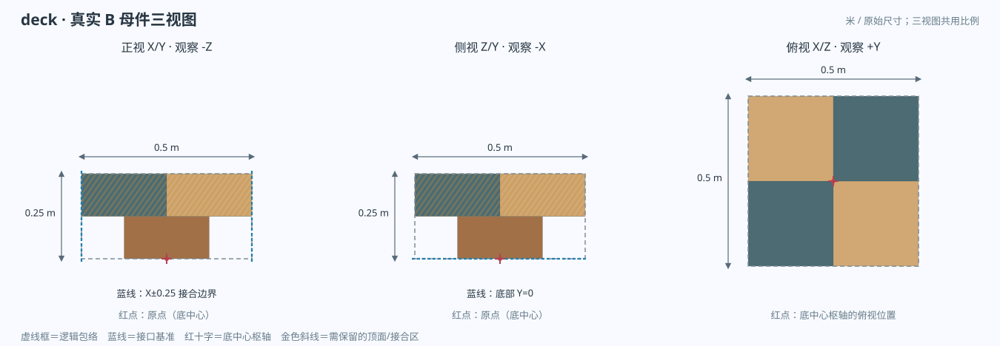
来自实际 deck/deck.blend 的 5 个原生网格、40 个顶点；三视图同尺度投影，没有用示意盒替代原模型。- 重复 / 排列
- X/Z均按0.5m拼铺；顶面高度固定0.25m。
- 接合与朝向
- X=±0.25和Z=±0.25为四边拼铺边界，Y=0为底部。
- 保留什么
- 保留可走顶面、四边对齐基准；不能用贯通孔洞代替铺面。
- 可以重设计
- 可以改变石块组合、内缩底座、表面分层与刻缝。
- 接缝谁负责
- 落脚平台由同类铺面组成，转角接口由平台边界处理。
- 尺寸处理
- 保持整件原比例。只增加或减少认证规格数量；本轮不裁切、不局部变形、不自动补面，也不认证新尺寸。
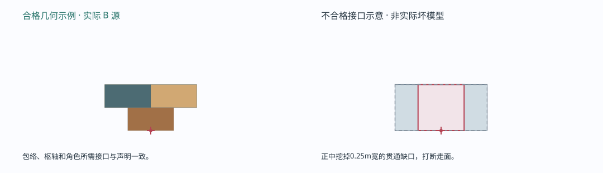
右侧红色仅为精确错误图解，说明应拒绝的接口；没有把它当作已经制作或导入的失败资产。原生源 · 实际 FBX · 色板原生 SHA256 4B014C678BF99D43D043E90291EF7E2A77B66D7EC1ACB060D04B80ADC5BBB735
母件职责 03 / 固定规格 · 边缘重复
侧缘压顶coping
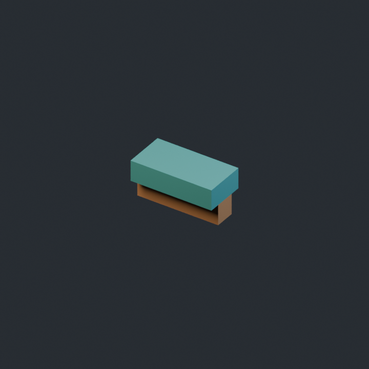
逻辑占位 0.5 × 0.25 × 0.25 m · 底部中心枢轴 · 本轮无外扩
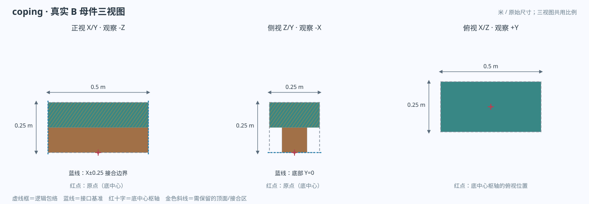
来自实际 coping/coping.blend 的 2 个原生网格、16 个顶点；三视图同尺度投影，没有用示意盒替代原模型。- 重复 / 排列
- 长轴X，每0.5m一段，端面保持同一高程。
- 接合与朝向
- X=±0.25为连续长边接合面；Y=0为底部。
- 保留什么
- 帽沿及端面高度；装饰不能越过逻辑端面。
- 可以重设计
- 可以改底座退台、上下层次、帽沿轮廓与分色。
- 接缝谁负责
- 平台按对应边生成收口；端头不做任意切片或临时灰块。
- 尺寸处理
- 保持整件原比例。只增加或减少认证规格数量；本轮不裁切、不局部变形、不自动补面，也不认证新尺寸。
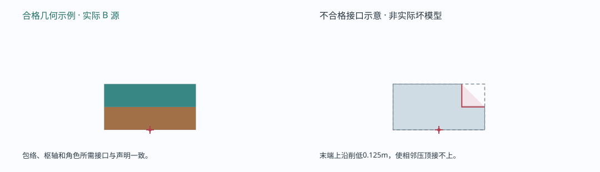
右侧红色仅为精确错误图解，说明应拒绝的接口；没有把它当作已经制作或导入的失败资产。原生源 · 实际 FBX · 色板原生 SHA256 5AE711CA1BF7DBE3C89742D3CD50D7A99AADC910C6C3B13F30F8DB289EADFFC0
母件职责 04 / 固定规格 · 带端口重复
栏杆直段rail
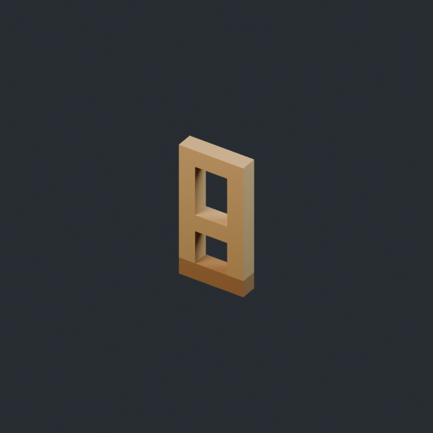
逻辑占位 0.5 × 1 × 0.125 m · 底部中心枢轴 · 本轮无外扩
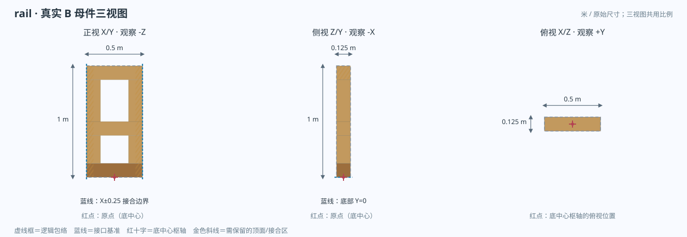
来自实际 rail/rail.blend 的 7 个原生网格、56 个顶点；三视图同尺度投影，没有用示意盒替代原模型。- 重复 / 排列
- 沿X每0.5m。规则使栏杆相对柱身向内错开半厚度，避免共面。
- 接合与朝向
- X=±0.25为端口；Y从0至1；厚度Z=0.125m。
- 保留什么
- 端口位置、栏杆高度与空隙；不能把栏杆改成整块不透明实墙。
- 可以重设计
- 可以做双横杆、窗格和其它保留通透性的真实结构。
- 接缝谁负责
- 杆段与post配合。平台的连接端口不布置挡路栏杆。
- 尺寸处理
- 保持整件原比例。只增加或减少认证规格数量；本轮不裁切、不局部变形、不自动补面，也不认证新尺寸。
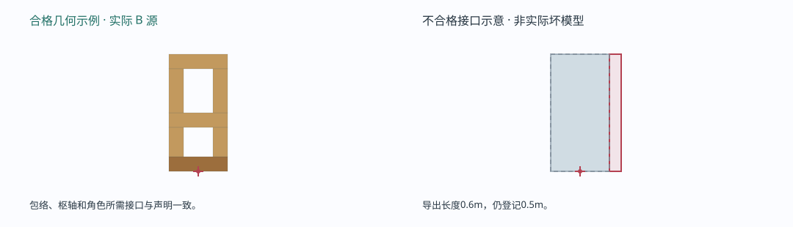
右侧红色仅为精确错误图解，说明应拒绝的接口；没有把它当作已经制作或导入的失败资产。原生源 · 实际 FBX · 色板原生 SHA256 35C3A567CD94401647A5F99427C1272710ABB8B2F382AFF39664DA6CFF5C5537
母件职责 05 / 固定规格 · 节点件
栏杆节点柱post
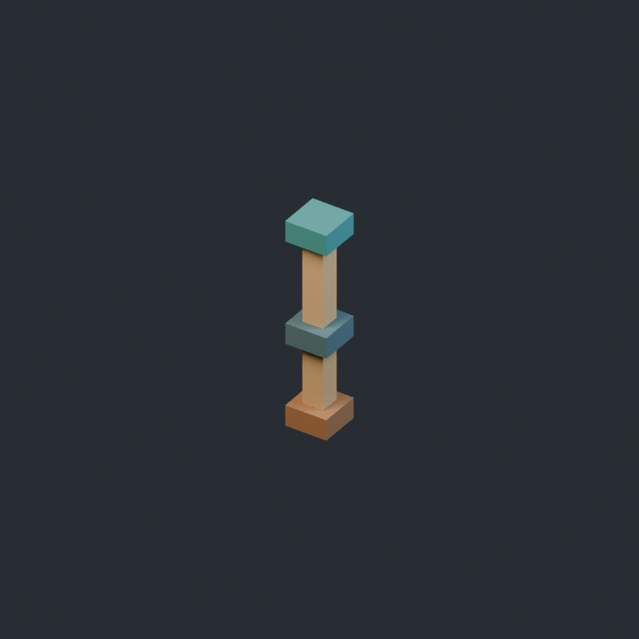
逻辑占位 0.25 × 1.25 × 0.25 m · 底部中心枢轴 · 本轮无外扩
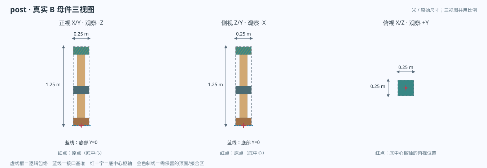
来自实际 post/post.blend 的 5 个原生网格、40 个顶点；三视图同尺度投影，没有用示意盒替代原模型。- 重复 / 排列
- 按栏杆连接和端头派生，保持自己的底部中心。
- 接合与朝向
- 底部Y=0，帽顶Y=1.25；X/Z各为±0.125m。
- 保留什么
- 脚底锚点、帽顶和对接包络。
- 可以重设计
- 可以重新设计底脚、束腰柱身、柱头和色带。
- 接缝谁负责
- 柱由栏杆节点规则定位，不能依赖拖动半格修正错误枢轴。
- 尺寸处理
- 保持整件原比例。只增加或减少认证规格数量；本轮不裁切、不局部变形、不自动补面，也不认证新尺寸。
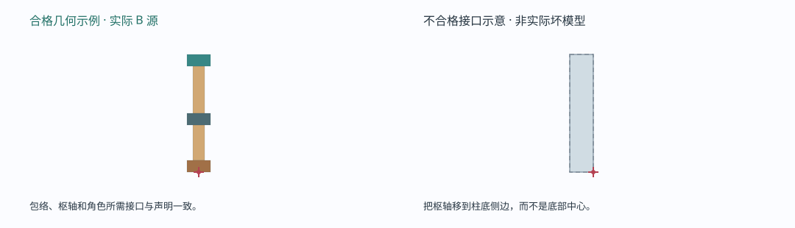
右侧红色仅为精确错误图解，说明应拒绝的接口；没有把它当作已经制作或导入的失败资产。原生源 · 实际 FBX · 色板原生 SHA256 BCE4FA891C5F3612552935711D04986EA4FE6F98D84F05009416DBA71FF37002
母件职责 06 / 固定规格 · 拱圈重复
阶梯拱圈石arch-stone
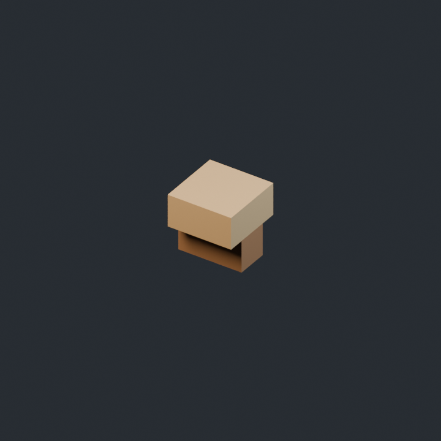
逻辑占位 0.25 × 0.25 × 0.25 m · 底部中心枢轴 · 本轮无外扩
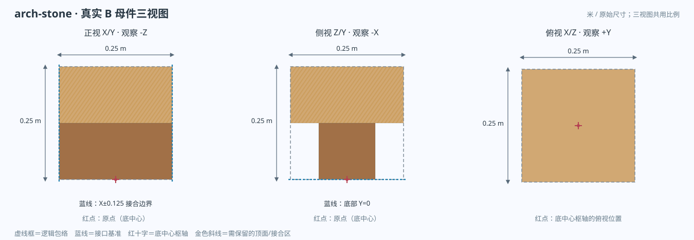
来自实际 arch-stone/arch-stone.blend 的 2 个原生网格、16 个顶点；三视图同尺度投影，没有用示意盒替代原模型。- 重复 / 排列
- X/Y按0.25m沿合法拱洞阶梯剖面安排。
- 接合与朝向
- 0.25m立方包络；需要承接的上、左、右边界保持。
- 保留什么
- 拱洞相邻边界与承接面；任何部分不能侵入受保护开口。
- 可以重设计
- 可以做双层石、削肩、浅退面及分色。
- 接缝谁负责
- 相邻圈石围绕同一开口安排，跨高差仍须保持拱圈连续。
- 尺寸处理
- 保持整件原比例。只增加或减少认证规格数量；本轮不裁切、不局部变形、不自动补面，也不认证新尺寸。
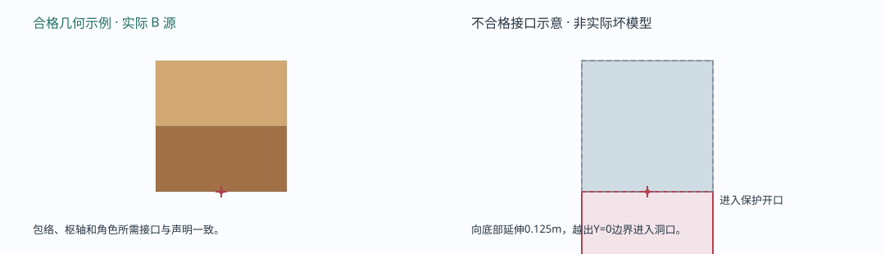
右侧红色仅为精确错误图解，说明应拒绝的接口；没有把它当作已经制作或导入的失败资产。原生源 · 实际 FBX · 色板原生 SHA256 DA89A1880764E3DECD239307ED51D6EFFDE7F268DD3A2D5516E84C65E4818863
母件职责 08 / 固定规格 · 收口件
拱顶收口keystone
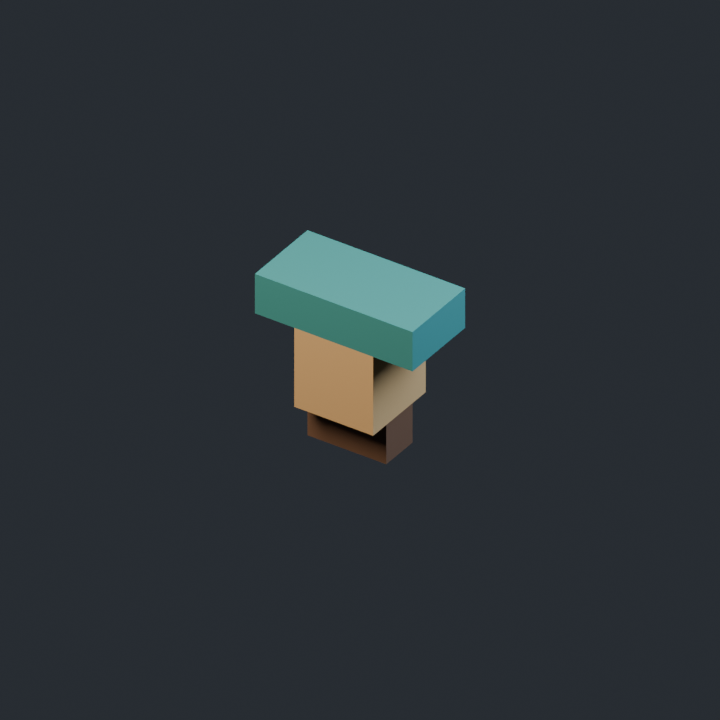
逻辑占位 0.5 × 0.5 × 0.25 m · 底部中心枢轴 · 本轮无外扩
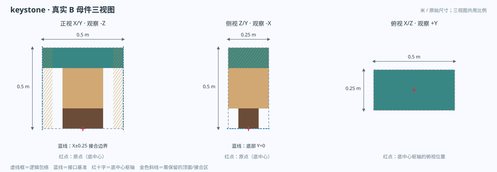
来自实际 keystone/keystone.blend 的 3 个原生网格、24 个顶点；三视图同尺度投影，没有用示意盒替代原模型。- 重复 / 排列
- 以0.5m宽替代拱顶中央两块0.25m圈石。
- 接合与朝向
- 两侧对称接合面X=±0.25，底部Y=0。
- 保留什么
- 左右接合界面和对称性；外扩不能改变被替代的跨度。
- 可以重设计
- 可以做阶梯收肩、帽顶与不同石层分色。
- 接缝谁负责
- 由拱圈规则替换中央两块，不额外叠放一枚堵住洞。
- 尺寸处理
- 保持整件原比例。只增加或减少认证规格数量；本轮不裁切、不局部变形、不自动补面，也不认证新尺寸。
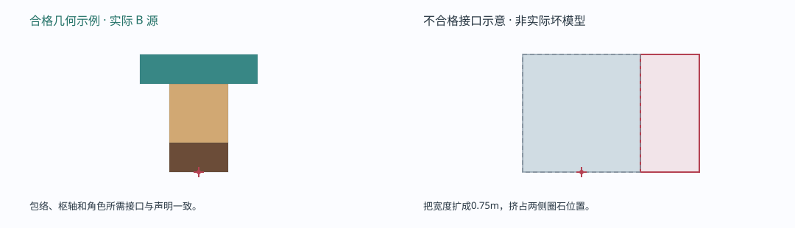
右侧红色仅为精确错误图解，说明应拒绝的接口；没有把它当作已经制作或导入的失败资产。原生源 · 实际 FBX · 色板原生 SHA256 8DD6502D5CB13BC3FEE6EFF868D604FECC9F93780731A061E66528FBD82AA81C
母件职责 09 / 固定规格 · 支承收口
桥台支承压顶abutment-cap
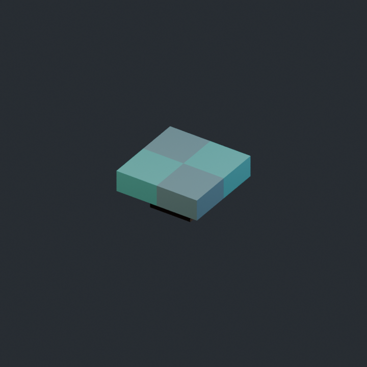
逻辑占位 0.5 × 0.25 × 0.5 m · 底部中心枢轴 · 本轮无外扩
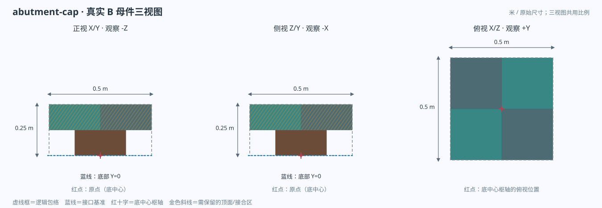
来自实际 abutment-cap/abutment-cap.blend 的 5 个原生网格、40 个顶点；三视图同尺度投影，没有用示意盒替代原模型。- 重复 / 排列
- 用于引道/平台支承交界，不是任意填充体素。
- 接合与朝向
- X/Z各为±0.25，底部Y=0，上界Y=0.25。
- 保留什么
- 顶面高程、支承面与逻辑包络。
- 可以重设计
- 可以改底座、四角退台、帽石层次和色带。
- 接缝谁负责
- 它负责支承交界的美术收口；墙芯仍由明确规则生成。
- 尺寸处理
- 保持整件原比例。只增加或减少认证规格数量；本轮不裁切、不局部变形、不自动补面，也不认证新尺寸。
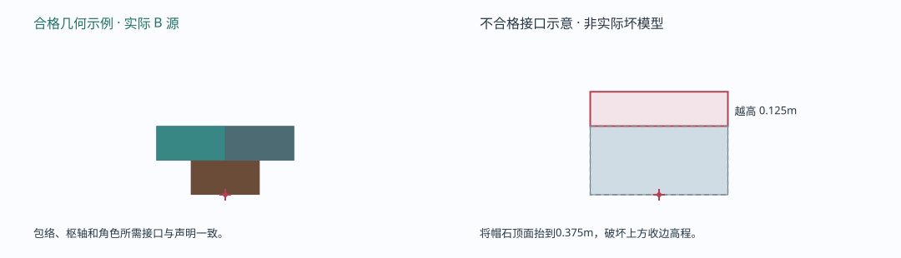
右侧红色仅为精确错误图解，说明应拒绝的接口；没有把它当作已经制作或导入的失败资产。原生源 · 实际 FBX · 色板原生 SHA256 3EEC7AB0CAE210CE2003E98FFF5E3494223298DBACD22B024D0631D188E72C47
把自己的母件接入同一条路线
1 · 工坊制作从空白模板列出的九个角色开始。按图保留包络、枢轴和接口，重新设计层次、鼻口、柱头或栏杆结构；保留原生.blend和制作recipe。
2 · 导出并登记逐件导出palette FBX与PNG。填写套件文件的角色、路径和固定尺寸，选择kit-manifest.json登记；来源指纹由工具计算，不手填哈希。
3 · 检查后预览工具检查九角色、真实导入尺寸、枢轴、UV、贴图及来源版本。选择新套件在同一作者中预览；预览不改变原已提交路线。
4 · 采用或取消采用候选后整条路线的对应角色换件；取消恢复原套件与原网格。缺件/不兼容要先修正，不改生成器常量来迁就第二套。
5 · 保存再继续保存可编辑作者，保留路线节点、局部标高及套件身份/内容版本。重开仍编辑同一条路线；静态烘焙是另一种输出。
6 · 反查与迭代按职责查看实际源件预览、尺寸并在工程中定位原FBX；对应.blend保留在套件原生源中。改造型后明确登记新版本，重新预览；不静默覆盖已保存作品的源。
登记文件里要填什么？
role | 本族九个角色之一；不可任意起另一个职责名。 |
|---|
id / title | 模型身份与显示名；可按自己的套件命名。 |
|---|
logicalSizeMeters | 固定接口尺寸，必须与实际导出和枢轴一致。 |
|---|
fbx / palette / source | 相对于套件文件夹的实际文件路径；不填机器绝对路径。 |
|---|
unityAdapterYaw | 格式轴适配。当前共享导出流程为180°，要用实际导入核验。 |
|---|
完整JSON以模板为准，必须有九个资产条目；B实际文件可作为真实路径示例。
组合范围和不能隐藏的限制
路线为有限正交折线，可走净宽仅按整数米1—6m；直段0.5m步进、标高0.25m步进。过短/过陡、自交、走廊重叠、缺件或洞口放不下时拒绝候选，保留上次有效结果。
本轮没有任意平滑曲桥或跨角拱洞。桥下洞只在合法水平直段，显示与碰撞一起留空；不自动挖掉A地形。A与B分别保留作者和网格。
本页的几何、图片和文件全部来自自有工坊B源。Tiny Glade原作JSON和私有对照数据不在本手册或公开源包中。